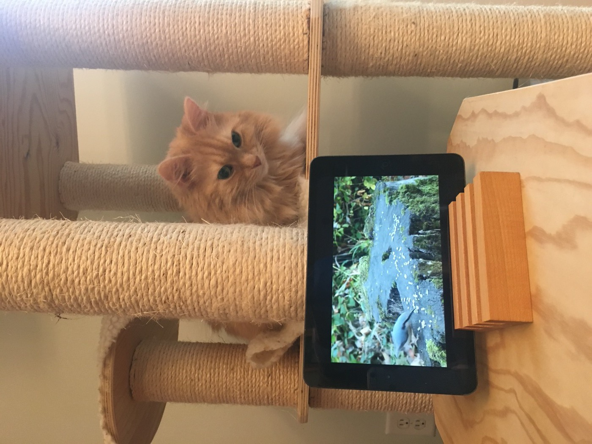

Before the catio, before the back door with the good view of the grass, there was one channel, and it ran on a tablet.
The arrangement was simple. The tablet went into its wooden stand, the stand went onto the platform below the cat tree, and somebody pressed play on several uninterrupted hours of birds hopping around a mossy stump. Paradox took the mezzanine — close enough to supervise, high enough to deny any interest in the outcome.

The critics agree
It never fooled anyone, exactly. The birds had no smell, made the wrong sounds, and lived behind glass that was clearly not the usual glass. But the ears tracked every hop anyway, the way a person keeps reading a mystery whose ending they already know.
The tablet years ended when the real yard got its mesh box and its live feed. Nobody has asked for a rerun since. But for a few winters, this was appointment viewing — and the reviews, delivered nightly from the top of the tree, were generally favorable.